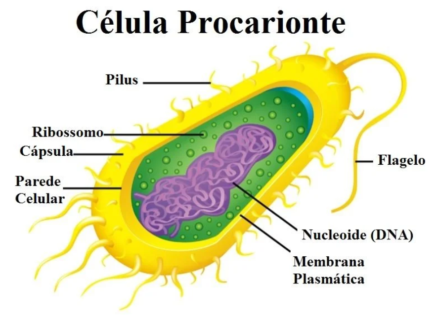
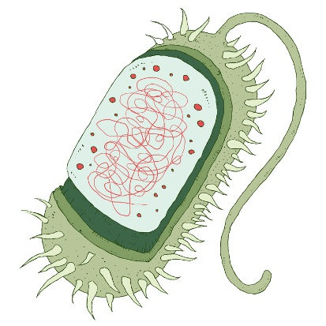
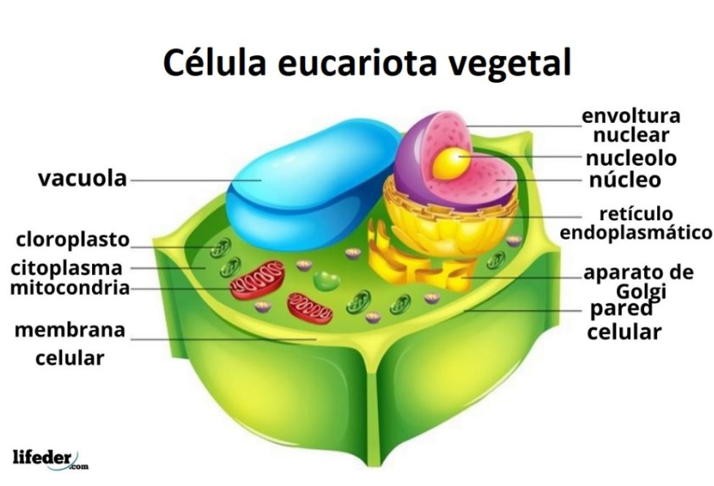
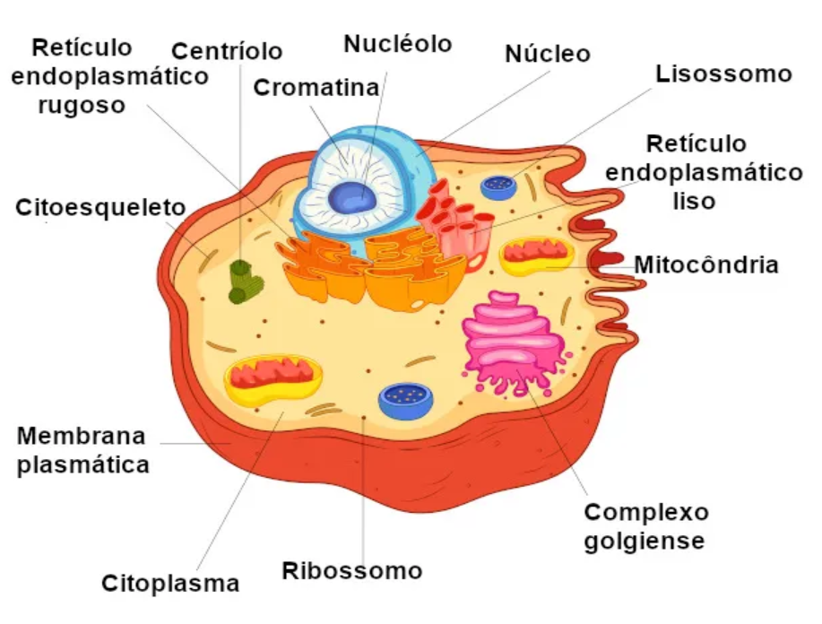
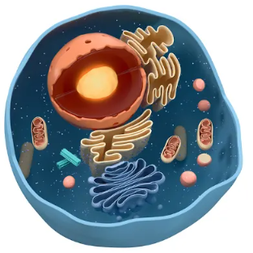
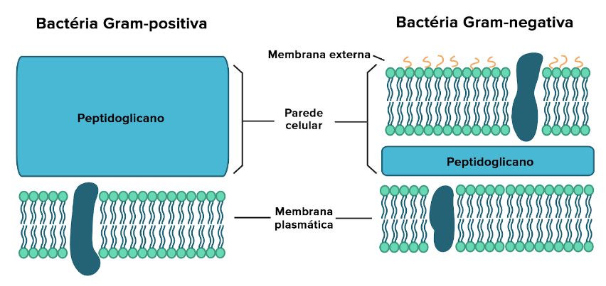

A quarta aula de biologia começou com a revisão da história da invenção do microscópio e da teoria celular. Após o resumo, grande maioria da aula foi focada na história do descobrimento da célula, a explicação dos diferentes tipos de células(procariontes e eucariontes), e a identificação da diferença entre as células eucariontes vegetais e animais. Ao final da aula vimos um pouco mais sobre a parede celular das bactérias e recebemos a atividade de pesquisar sobre o que é nanotecnologia e como ela pode ser útil na biologia.
Resumo do Dia:

A descoberta da célula
No século XVII, o cientista inglês Robert Hooke fez uma descoberta que mudaria para sempre nossa compreensão da vida: as células. Observando cortiça através de um microscópio rudimentar, Hooke viu pequenas estruturas que se assemelhavam a células de favos de mel. Essas estruturas foram chamadas de “células”. Posteriormente, a Teoria Celular foi desenvolvida por outros pesquisadores, como Matthias Schleiden e Theodor Schwann, afirmando que todos os seres vivos são formados por células (exceto o vírus). Graças a esses pesquisadores, o mundo das células foi revelado, abrindo caminho para a biologia moderna.
Primeiras descrições dos espermatozoides.
No século XVII, o comerciante Anton van Leeuwenhoek fez uma descoberta notável relacionada aos espermatozoides. Ele é amplamente reconhecido como o primeiro a observar essas células reprodutivas humanas. Utilizando um microscópio que ele mesmo criou, van Leeuwenhoek examinou o esperma e ficou surpreso ao ver os minúsculos “animais” se retorcendo. Ele descreveu essas células como pequenos seres. Suas observações foram publicadas pela prestigiosa Royal Society, gerando um novo campo de estudo sobre a biologia espermática. Van Leeuwenhoek também examinou espermatozoides de outros mamíferos e verificou sua presença nas trompas de Falópio e no útero das fêmeas. Essa descoberta pioneira abriu caminho para o entendimento mais profundo da reprodução humana e da biologia dos espermatozoides.
Tipos de Celulas
Células procariontes
As células procariontes, também conhecidas como protocélulas ou células procarióticas, são células que não possuem um núcleo celular definido. Diferentemente das células eucariontes, o material genético nas células procariontes fica disperso no citoplasma. Vamos explorar mais sobre a estrutura e características dessas células:
Estrutura da célula procarionte:
Cápsula: Reveste a célula externamente.
Citoplasma: Substância gelatinosa que mantém o formato da célula.
DNA: Carrega as informações genéticas da célula.
Flagelo: Permite a locomoção da célula.
Membrana plasmática: Controla a troca de substâncias com o meio externo.
Parede celular: confere forma à célula.
Pilus: Possibilita a fixação da bactéria ao meio.
Ribossomo: Estrutura responsável pela produção de proteínas.
Principais características da célula procarionte:
Núcleo não separado: O núcleo é formado por membranas que constituem o “nucleoide”, uma região onde o DNA se encontra disperso no citoplasma.
circular: O material genético é formado por um filamento de DNA circular, sem proteínas associadas.
Membrana plasmática: Realiza a função de parede celular protetora e permite a troca de substâncias com o ambiente exterior.
Nutrição: As células procariontes obtêm carbono e energia por meio de ação fototrófica (usando luz solar) ou ação quimiotrófica (aproveitando energia de compostos químicos).
Seres procariontes:
Os procariontes são organismos de tamanho relativamente pequeno e com funcionamento simplificado.
Surgiram há bilhões de anos como criaturas unicelulares capazes de sobreviver em diversos ambientes, incluindo condições inóspitas.
As células procariontes podem ser bactérias ou Archaea
Ilustração de uma célula procarionte:


Células Eucariontes
As células eucariontes são aquelas que apresentam um núcleo verdadeiro, ou seja, o material genético fica separado dos demais componentes celulares pelo envoltório nuclear denominado carioteca. Essas células possuem várias estruturas denominadas organelas, localizadas em seu citoplasma. Vamos explorar mais sobre as características das células eucariontes:
1 - Núcleo Delimitado:
O núcleo bem definido é a principal diferença entre as células eucariontes e as células procariontes. No caso das células eucariontes, o material genético está envolvido em uma membrana, formando o núcleo.
2 - Organelas Membranosas:
No interior do citoplasma das células eucarióticas, encontramos diversas organelas membranosas com funções específicas:
Retículo Endoplasmático: Responsável pela síntese e transporte de proteínas.
Complexo Golgiense: Participa da modificação e empacotamento de proteínas.
Lisossomos: Contêm enzimas digestivas para degradar substâncias.
Mitocôndrias: Local onde ocorre a cadeia respiratória e a produção de energia.
Peroxissomo: Envolvido na degradação de peróxidos.
Centríolos: Importantes na divisão celular.
Cloroplastos (ausentes em células animais): Realizam a fotossíntese.
Ribossomos: Organelas relacionadas à síntese de proteínas.
Citoesqueleto: Rede de filamentos proteicos que permite a movimentação de vesículas e a realização de processos como endocitose e exocitose.
3 - Divisão Celular:
As células eucariontes são capazes de realizar dois importantes processos de divisão celular:
Mitose: Uma célula diplóide dá origem a duas células diplóides iguais à célula-mãe.
Meiose: Uma célula diplóide origina quatro células haplóides, com metade do número de cromossomos da espécie.
4 - Ampla Distribuição:
As células eucariontes estão presentes na maioria dos organismos vivos, incluindo fungos, protistas, animais e plantas.
5 - Subdivisões:
As células eucariontes podem ser divididas em duas classes, as células eucariontes vegetais e as células eucariontes animais. Tanto as células vegetais quanto as animais apresentam algumas diferenças notáveis. Vamos explorá-las:
1 - Estrutura e Forma:
Célula Animal: Possui formato irregular e não tem uma forma fixa. Pode apresentar cílios e flagelos.
Célula Vegetal: Apresenta uma forma fixa e geralmente é retangular ou poligonal. Possui um grande vacúolo que ocupa grande parte do citoplasma, responsável pelo armazenamento de seiva e controle da entrada e saída de água.
2 - Parede Celular:
Célula Vegetal: Possui uma parede celular externa à membrana plasmática, composta principalmente de celulose. Essa parede oferece sustentação, resistência e proteção contra patógenos externos.
Célula Animal: Não possui parede celular.
3 - Organelas:
Mitocôndrias: Presentes em ambas as células, realizam a respiração celular.
Retículo Endoplasmático Liso: Encontrado em ambas, sintetiza lipídios.
Retículo Endoplasmático Rugoso: Também presente em ambas, é responsável pela síntese de proteínas.
Ribossomos: Encontrados em ambas, participam da síntese de proteínas.
Aparelho de Golgi: Presente em ambas, modifica, armazena e exporta proteínas.
Lisossomos: Presentes nas células animais, realizam a digestão de moléculas orgânicas.
Peroxissomos: Também nas células animais, realizam a digestão de substâncias.
Vacúolos: Presentes nas células vegetais, armazenam substâncias.
Plastos: Exclusivos das células vegetais, armazenam substâncias e pigmentos. Existem três tipos: leucoplastos (reserva energética), cromoplastos (cores em frutos e flores) e cloroplastos (fotossíntese).
Glioxissomos: Presentes nas células vegetais, transformam ácidos graxos em açúcares.
Centríolos: Encontrados apenas em células vegetais de briófitas e pteridófitas, estão envolvidos na divisão celular.
ilustração de célula eucariótica vegetal:
ilustração de Célula eucariótica animal:
.
.
.

Parede celular em bactérias
As bactérias Gram-positivas e Gram-negativas são classificadas com base em suas características de coloração e na composição de suas paredes celulares. As principais diferenças entre esses dois grupos:
1 - Bactérias Gram-positivas:
Coloração: Quando submetidas à coloração de Gram, essas bactérias retêm a cor azul-arroxeada.
Parede Celular:
Possuem uma parede celular espessa, composta principalmente por peptidoglicano.
Não possuem uma membrana externa adicional.
Contêm ácidos tóxicos.
Exemplos: Bacillus, Staphylococcus, Streptococcus e Lactobacillus.
2 - Bactérias Gram-negativas:
Coloração: Após a coloração de Gram, essas bactérias assumem um tom róseo-avermelhado.
Parede Celular:
Possuem uma parede celular mais fina, composta por uma camada de peptidoglicano e uma membrana externa adicional.
A membrana externa contém lipopolissacarídeos.
Exemplos: Escherichia, Haemophilus, Pseudomonas e Salmonella.
ilustração:
.
.
.
O que é a Nanotecnologia e como ela pode ser aplicada a biologia:
A Nanotecnologia é um campo multidisciplinar que envolve a manipulação e o estudo de materiais em escala atômica e molecular. Ela tem aplicações em diversas áreas, incluindo a biologia. Aqui estão algumas maneiras pelas quais a nanotecnologia é aplicada à biologia:
1- Nanobiotecnologia e Nanomedicina:
Essas áreas exploram o uso de nanopartículas para fins médicos e biológicos. Isso inclui o desenvolvimento de sistemas de entrega de medicamentos em nanoescala, como a liberação controlada de fármacos e hormônios .
2 - Manipulação de Genes e Silenciamento Gênico:
A nanotecnologia é usada para melhorar a eficiência da transferência de genes e o silenciamento gênico. Isso pode ser útil em pesquisas genéticas e terapia gênica.
3 - Nanosensores e Diagnóstico:
Sensores em nanoescala são desenvolvidos para detectar doenças, infecções e contaminações de forma rápida e sensível. Esses sensores podem ser aplicados em diagnósticos médicos.
4 - Biorremediação e Controle de Pragas:
A nanotecnologia é usada para remover metais pesados e controlar pragas e patógenos. Isso tem implicações na agricultura e no meio ambiente.
5 - Superfícies Funcionais e Embalagens Ativas:
Desenvolvimento de embalagens ativas para proteção de alimentos e tecidos com propriedades distintas, incluindo ação antibacteriana.